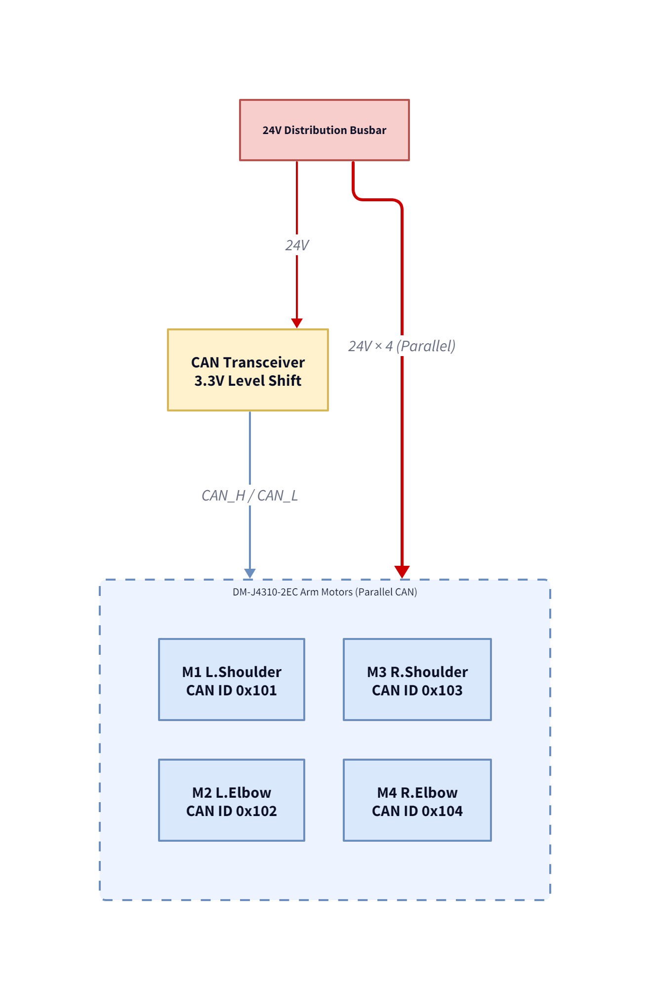
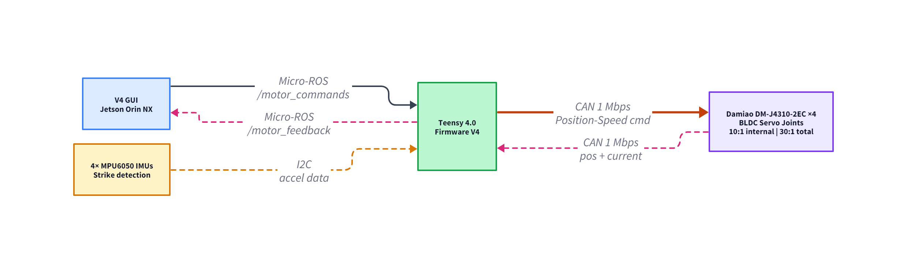

5.2.5 Arm Actuation
The arm actuation subsystem constitutes the primary strike-delivery mechanism of BoxBunny. Its function is to replicate the upper-body actions of a human training partner, executing targeted punches at anatomically derived striking zones and providing real-time impact detection for training analytics. This page presents an executive summary of the subsystem design, from requirements through to validated test results. Detailed derivations are linked in each subsection below.
Design Requirements
The arm actuation subsystem responds to system-level requirements RM-7 (strike types) and RM-8 (strike speed), both defined in the Robot Mechanism section (Section 5.2). The subsystem requirements below elaborate on how those system requirements are realised at the arm joint level.
System Requirements
| ID | Requirement | Source |
|---|---|---|
| RM-7 | Deliver three distinct strike types: Jab (pitch), Hook (roll), Uppercut (pitch + roll) | Padwork rehabilitation literature; Robot Mechanism (Section 5.2) |
| RM-8 | Execute a 90° arm sweep in ≤ 0.70 s; original 0.25 s target revised to account for Damiao PID acceleration overhead | Robot Mechanism (Section 5.2); see Testing and Evaluation (Section 5.2.5.5) for PID overhead analysis |
Subsystem Acceptance Criteria
The following acceptance criteria are derived from specific design decisions that introduce failure modes not captured at the system requirement level. ARM-AC-1 arises from ARM-SR-1 (90° motor sizing) — the choice of Damiao DM-J4310-2EC with internal PID ramps introduces a speed failure mode requiring firmware-measurable timestamp validation. ARM-AC-2 arises because RM-8 does not constrain motor thermal behaviour — sustained sparring introduces a thermal runaway failure mode requiring temperature monitoring (< 60°C). ARM-AC-3 arises from the dual-supply power architecture — the isolated 12 V logic rail must survive repeated emergency stops without PSU OVP trips, a failure mode not addressed by any RM code. ARM-AC-4 arises from the combat FSM design — multi-strike sequencing introduces a chain-execution latency failure mode not captured by single-strike RM-8. ARM-AC-5 arises from the current-limit safety system — peak motor current must stay below 2.0 A to protect 3D-printed PLA gears from thermally induced fatigue.
| ID | Acceptance Criterion | Derives From | Verification Test |
|---|---|---|---|
| ARM-AC-1 | 90° arm sweep ≤ 0.70 s (all six strike types at 30 rad/s) | ARM-SR-1 / RM-8 — Damiao PID ramp speed failure mode | Firmware timestamp delta (N=43 speed tests) |
| ARM-AC-2 | 5 min continuous sparring; peak motor temp < 60°C | RM-8 / RM-7 — thermal failure mode under sustained high-duty-cycle operation | Continuous sparring session + Damiao temperature telemetry |
| ARM-AC-3 | No PSU trip across 5 consecutive emergency stops | Dual-supply power architecture — regenerative braking OVP failure mode | Visual confirmation + voltmeter monitoring |
| ARM-AC-4 | 3-strike chain executed in ≤ 5 s total | Combat FSM design — multi-strike sequencing latency not captured by single-strike RM-8 | Video timestamp + GUI console log |
| ARM-AC-5 | Peak motor current < 2.0 A per motor (all strikes) | PLA gear thermal protection — current-limit safety system failure mode | CAN current telemetry (N=43 speed tests) |
Table: Arm Actuation Subsystem Requirements and Acceptance Criteria
System Design Narrative
Following the Systems Engineering V-Model introduced in Section 3.2, RM-7, RM-8, and ARM-AC-1 through ARM-AC-5 were fixed before detailed motor selection, gear ratio sizing, or firmware architecture decisions were made.
Figure: Systems Engineering V-Model for the BoxBunny Arm Actuation subsystem, tracing RM-7, RM-8, and ARM-AC-1 through ARM-AC-5 from design decomposition through integration to verification closure.
Left Side of the V: Design Decomposition
RM-7 and RM-8 drove the 2-DOF coaxial differential architecture: both motors co-located at the pivot (ARM-SR-2 mass centralisation), 3:1 helical-spur gear reduction for torque multiplication (ARM-SR-1), and the dual-supply power rail separating the 24 V motor bus from the 12 V logic rail (ARM-AC-3 regenerative braking protection). ARM-AC-1 drove the motor selection journey (servo → ODrive → Damiao DM-J4310-2EC), the 200 Hz unified Teensy control loop, and the Sparse Edge-Trigger CAN strategy. ARM-AC-2 drove the thermal margin analysis (PLA Tg ~55–60°C), the PETG housing specification, and the Damiao temperature telemetry integration.
Base of the V: Integration Build
At integration stage, the coaxial differential joint was assembled (V5: stainless D-shaft, Delrin pin, M2 screw reinforcement post-CDE-Fair), calibrated via the 4-test motor probe, and integrated with the Teensy firmware and micro-ROS pipeline. The strike library was populated with all six standard strikes (Left/Right Jab, Hook, Uppercut), and the state-aware motion planner (vector alignment skip, proportional snap-back) was commissioned.
Right Side of the V: Verification Closure
ARM-AC-1 closed with 0.64 s best time at 30 rad/s (N=43 benchmark): Pass.
ARM-AC-5 closed with 0.69 A peak current (N=43): Pass.
ARM-AC-2, ARM-AC-3, ARM-AC-4 pending formal test sessions: Partial.
RM-7 closes once all six strike types are demonstrated in sustained sparring (ARM-AC-2 session).
Full test procedures are in Testing & Evaluation (Section 5.2.5.5).
Acceptance Criteria Summary
The following table recaps the five measurable acceptance criteria derived from the requirements above. Torque calculations supporting ARM-AC-1 are provided in Appendix 1.
| ID | Criterion | Target | Req Link | Method |
|---|---|---|---|---|
| ARM-AC-1 | Strike speed (90° rotation) | ≤ 0.70 s | RM-8 | Firmware timestamp delta (N=43 speed tests) |
| ARM-AC-2 | Sparring endurance | 5 min continuous, <60°C motors | RM-8 | Continuous sparring session + Damiao temperature telemetry |
| ARM-AC-3 | Regenerative braking safety | No PSU trip over 5 emergency stops | RM-7, RM-8 | Visual confirmation and voltmeter monitoring |
| ARM-AC-4 | Multi-strike chain execution | 3-strike chain ≤ 5 s total | RM-7 | Video timestamp and GUI console log |
| ARM-AC-5 | Peak motor current within safety limit | < 2.0 A per motor | RM-8 | CAN current telemetry (N=43 speed tests) |
Subsection Highlights
| Section | Key Contribution |
|---|---|
| 5.2.5.1 Design & Ideation | 2-DOF coaxial differential joint selected from three motor platforms (servo, ODrive, Damiao); mass centralised at pivot to minimise moment of inertia. |
| 5.2.5.2 Mechanical Design | Structural failures observed at CDE Fair informed a material science revision from polymer shafts to a 6 mm stainless steel D-shaft with Delrin pin reinforcement, achieving sustained sparring capability. |
| 5.2.5.3 Electrical Integration | Dual-supply architecture (24 V motor bus / 12 V isolated logic rail) prevents regenerative braking OVP events from triggering a full robotic shutdown. |
| 5.2.5.4 Firmware & Software | Teensy 4.0 executes a deterministic 200 Hz unified loop (CAN + I2C + micro-ROS); a two-tier ROS 2 architecture separates real-time motor control from combat decision logic on the Jetson Orin NX. |
Design Evolution
Five major iterations were required to achieve the final deployed configuration. The following table summarises each transition and the engineering rationale.
| Iteration | Configuration | Outcome | Transition Rationale |
|---|---|---|---|
| 1. Interim | Gear-rail coaxial joint with servo motors | DOF validated; servos failed under impact load | BLDC motors required for impact resilience |
| 2. ODrive | ODrive V3.6 with 360 KV outrunner | FOC validated; jitter, no absolute position, excessive volume | Integrated actuator required |
| 3. Damiao | DM-J4310-2EC with 3:1 external spur gearbox (30:1 total) | All requirements met; CDE Fair demonstration successful | Structural failures exposed at CDE Fair under repeated impact |
| 4. Post-CDE-Fair | Stainless D-shaft, Delrin pin, M2 screw reinforcement | Structural integrity validated; sustained sparring achieved | Stateless return-to-zero motion produced unacceptable mechanical wear and poor sparring realism |
| 5. Final | State-aware motion planning: vector alignment skip, proportional snap-back recovery | Fluid, continuous sparring; reduced mechanical wear | Current deployed configuration |
Final Arm Design
The final deployed arm assembly consists of a compact 2-DOF coaxial differential joint, two Damiao DM-J4310-2EC integrated actuators mounted at the pivot, a 3:1 external helical-spur gear reduction stage, and a training stick with multi-layer padding incorporating embedded MPU6050 IMUs for impact detection.
Click and drag to rotate; scroll to zoom; right-click to pan. Toggle annotations to view key components.
Power Architecture
The arm motor power subsystem operates from a Mean Well LRS-200-24 (200 W, 24 V, 8.8 A) switched-mode PSU. All four Damiao motors receive power in parallel from a common distribution busbar. The 12 V logic rail is isolated from the motor bus to prevent regenerative braking OVP events from disrupting the Teensy or Jetson. Measured steady-state draw is approximately 8 W per motor at 24 V across 43 validated tests, with a combined peak of approximately 33 W.

Data Architecture
The arm actuation data path spans three hardware layers. At the
microcontroller level, the Teensy 4.0 issues Position-Speed mode
CAN commands to the four Damiao motors at up to 200 Hz (Sparse
Edge-Trigger strategy) and polls the four MPU6050 IMUs across two
I2C buses. Motor feedback and IMU data are packed into a 21-double
payload and published via micro-ROS to the Jetson Orin NX. The Jetson
hosts the GUI application, which executes the combat decision logic
and publishes motor commands on the
/motor_commands topic at 100 Hz.

Test and Evaluation Results
A controlled speed-test benchmark was conducted across all six standard strikes at set speeds ranging from 10 to 30 rad/s, with a minimum of three repetitions each, for a total of 43 validated tests. All tests were completed with zero safety trips, zero current-limit events, and zero position timeouts. Full methodology and raw data are documented in Section 5.2.5.5 Testing and Evaluation.
Acceptance Criteria Outcome
| ID | Criterion | Target | Measured | Status |
|---|---|---|---|---|
| ARM-AC-1 | Strike speed (90°) | ≤ 0.70 s | 0.64 s best (Left Jab at 30 rad/s) | Pass |
| ARM-AC-2 | Sparring endurance (5 min, <60°C) | 5 min continuous | Pending formal session | Pending |
| ARM-AC-3 | Regenerative braking safety | No PSU trip / 5 E-stops | Pending dedicated test session | Pending |
| ARM-AC-4 | Multi-strike chain (≤ 5 s for 3 strikes) | ≤ 5 s total | Pending chain-execution test | Pending |
| ARM-AC-5 | Peak motor current | < 2.0 A per motor | 0.69 A max (Right Hook, M4); N=43 | Pass |
Full test methodology, per-strike benchmark data, PID overhead analysis, and video evidence are documented in Section 5.2.5.5 Testing and Evaluation.
Limitations
Damiao PID Firmware Acceleration and Deceleration Ramps
The most significant current limitation of the arm actuation subsystem is not a mechanical or electrical constraint, but a firmware one inherent to the Damiao DM-J4310-2EC actuator platform. The system-level requirement RM-5 specifies that a 90° arm sweep must be completed in 0.25 s. Kinematic analysis and torque calculations confirm that the motor's rated output torque and top angular velocity are mechanically sufficient to achieve this target within the arm's moment of inertia; the physical system is not speed-limited by its mechanics. The limiting factor is the Damiao actuator's internal closed-loop PID controller, which applies a fixed acceleration ramp at the start of every commanded motion and a symmetric deceleration ramp approaching the target position, irrespective of the commanded speed setpoint. Across 43 validated speed-benchmark trials, this ramp overhead was measured at approximately 0.4 to 0.5 s per strike, constituting the dominant fraction of the total motion time.
As a consequence, the best recorded full-stroke time of 0.64 s (Left Jab at 30 rad/s) reflects the PID ramp overhead rather than a kinematic ceiling. The requirement target of 0.25 s could be approached only if the Damiao firmware were modified to reduce or eliminate its internal ramp profile, or if the actuator were replaced with a platform permitting direct torque or velocity control without internal position-loop overhead. For the purposes of this report, RM-5 is classified as partially fulfilled: the arm's kinematic design meets the intent of the requirement, and the shortfall is attributed specifically to an externally imposed firmware constraint rather than a design deficiency in the mechanical or electrical architecture. A full analysis of the PID overhead, including measured ramp profiles across all six strike types and speed setpoints, is documented in Section 5.2.5.5 (Testing and Evaluation).
Detailed Documentation
Complete technical documentation is organised across five sections:
Design & Ideation
Motion analysis, concept selection, motor selection rationale
Mechanical Design
Joint kinematics, gear reduction, structural revisions and material science
Electrical Integration
Dual-rail power architecture, CAN bus, I2C IMU topology
Firmware & Software
200 Hz unified loop, GUI application, Strike Library, ROS 2 interface
Testing & Evaluation
N=43 benchmark, PID overhead analysis, power budget validation